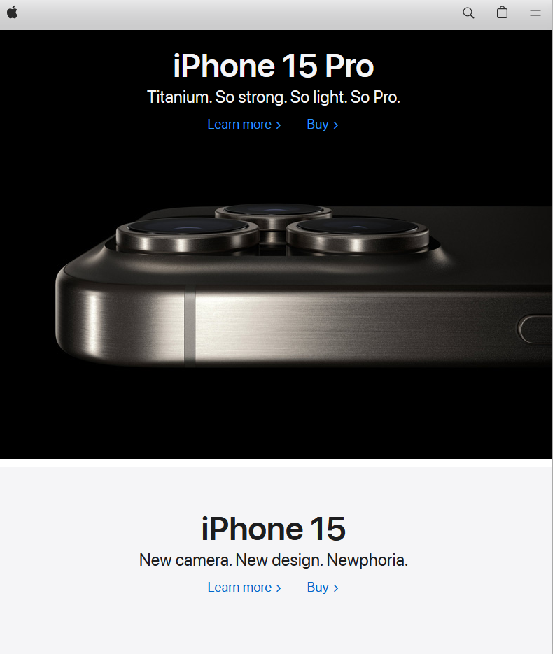
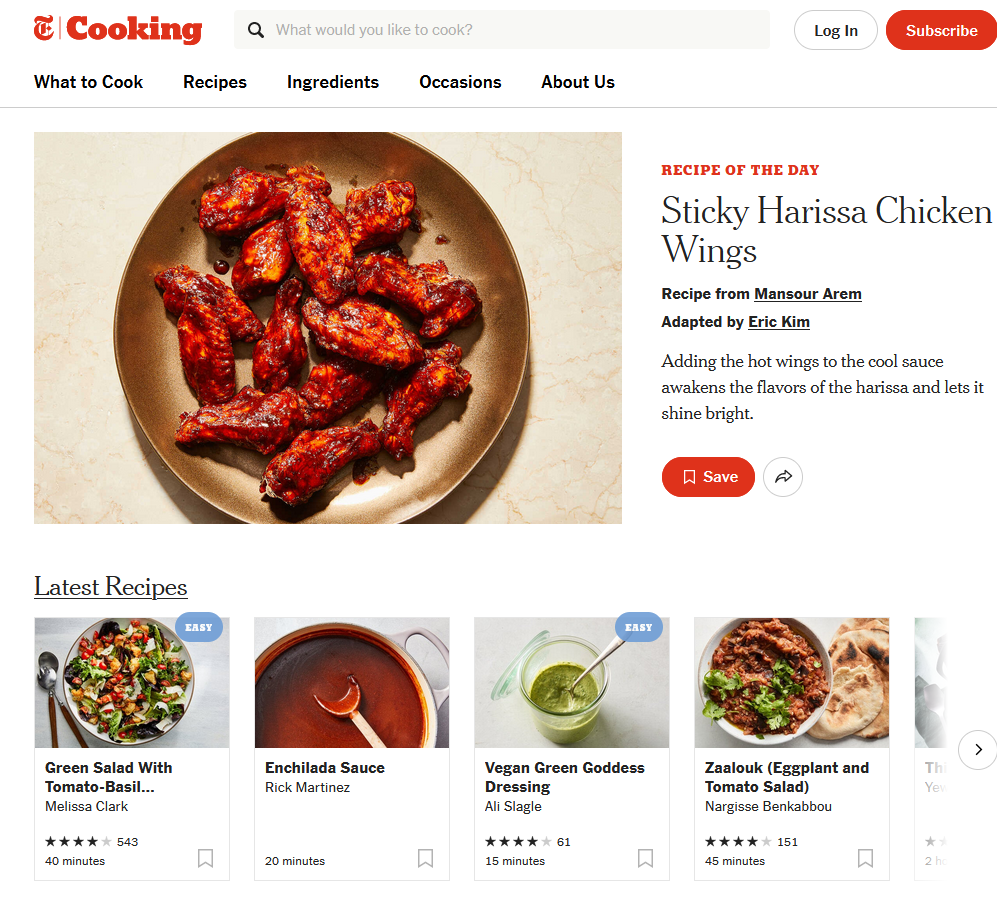

Design Principles Document
Timothy Sansone
White Space and Clean Design
Apple Product Focus
apple.com Apple.com is known for its minimalistic design approach. The homepage uses generous amounts of white space (for negative space) through its website. This helps in separating and emphasizing content, making it easier for users to focus on key information. This also gives the website a sense of elegance and simplicity to the design.
Fitt's Law
HubSpot
hubspot.comFitt's Law is a principle of website development that describes the relationship between the time it takes to reach a target and the size of the target. This law can be applied to make user interfaces more user friendly and efficient. Hubspot.com adheres to Fitt's Law by having larger clickable elements, such as buttons and links. This website also has adequate spacing and padding around clickable elements, which makes them more effective and reduces the risk of accidental clicks.
Repetition
NY Times Cooking Website
cooking.nytime.com Repetition is a fundamental design principle in website design used to create a cohesive and visually appealing user experience. The NY Times Cooking website utilizes this concept by using consistent elements, such as colors, typography, shapes and layouts. These elements are utilized throughout the website to establish a unified and recognizable design language. As you navigate throughout the various pages on the website, it is noticeable that there is an emphasis on utilizing the same logos, colors, typefaces, and buttons, which ensures that users can easily find their way around the site.